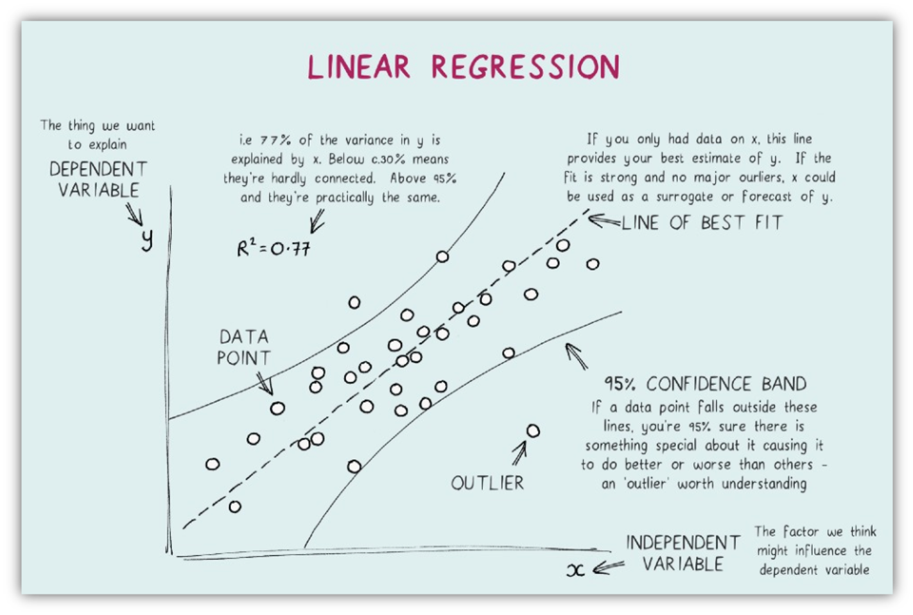
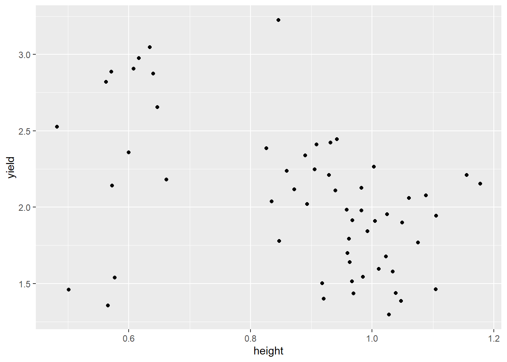
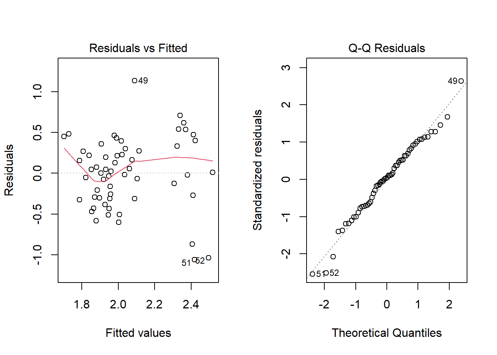

Regression analysis is a technique used for the modeling and analysis of numerical data. This technique is used when the association or relationship between variables is investigated. A linear relationship between an independent (X) and dependent (Y) variable is provided by the linear regression technique, which is used to forecast the course of future occurrences. Predictive analysis is done using this statistical technique in data science and machine learning. It exploits the relationship between two or more variables so that we can gain information about one of them through knowing values of the other. One of the variables is required to be dependent on one or more of the independent variables. The independent variable is also the predictor or explanatory variable that remains unchanged due to the change in other variables. However, the dependent variable changes with fluctuations in the independent variable. The regression model predicts the value of the dependent variable, which is the response or outcome variable being analyzed or studied. Regression can be used for prediction, estimation, hypothesis testing, and modeling causal relationship.
Several objectives exist for carrying out regression analysis, among them is to:
See if a change in \(X_i\) will affect Y. The aim would be to investigate whether there is a change in Y when the level of X is changed. Thus, establishing a functional relationship between the two variables. In this case, X is assumed to be a continuous variable. A scatter plot would show if a relationship existed between the two variables.
See how the change in \(X_i\) affects Y. We would be interested in knowing by how much the value of Y changes per unit change in X.
Predict Y given \(X_i\). The objective in this case is to provide a mathematical function that would be used in predicting values of Y per given X.
When the interest is in the functional form of a relationship, then we are dealing with regression. For instance, the yield of a crop may be related to plant density by a certain curve. We could carry out an experiment to determine the equation of this curve to find the optimum plant density for the greatest yield per unit area.
Regression analysis is a statistical method that facilitates three key functions:
Description: Regression analysis enables the statistical description of relationships between dependent and independent variables.
Estimation: It allows for the estimation of dependent variable values based on observed independent variable values.
Prediction: It aids in identifying risk factors affecting outcomes and predicting individual prognoses.
The two basic types of regression are simple linear regression and multiple linear regression, although there are non-linear regression methods for more complicated data and analysis. If there is a single input variable X(independent variable), such linear regression is known as simple linear regression.
Simple Linear Regression
Simple linear regression involves one independent variable denoted by X and one dependent variable denoted by Y. The \(X_s\) are selected levels of the treatment under investigation. The response corresponding to the effect is measured. In simple linear regression we want to explain the behavior of dependent variable Y in terms of X. Simple linear regression is concerned with establishment of a linear function of independent variable X. The procedure involves fitting simple linear regression to the data where parameters are estimated. The suitability of the model is then assessed. The first step should be to plot the raw data to have an indication of the relation between Y and X. If such relationship is not noticeable, then other reasons should be given for proceeding to fit the regression line. Simple linear regression is used to test whether a relationship is linear, and if so to determine the equation of the best fitting straight line. The concept of the “best fit” line finds its roots in the principle of least squares, a concept attributed to the German mathematician Gauss (1777–1855). A line is considered the optimal fit for the data when the total of squared vertical distances (deviations) from the observed points to that line is minimized. The optimal fit Line equation offers a linear representation of the connection between the dependent and independent variables. The slope of this line reflects the rate at which the dependent variable alters with a one-unit adjustment in the independent variable(s).

The fitted regression line or least squares line is then the line whose equation is \(\hat{y}\) = \(\alpha\) + \(\beta_1\)x
Assumptions
Simple linear regression is a parametric test; hence it makes certain assumptions about the data. These assumptions include:
Linear Function: There exists a linear relationship between the independent variable, X, and the dependent variable, Y, i.e. the line of best fit through the data points is a straight line.
Independent Errors: The errors, \(\varepsilon_{ij}\) are independent. This means that the value of e for a particular value of X is not related to the value of e for any other value of X. Thus, the value of Y for a particular X is independent of any other value of X.
Normally Distributed: The errors, \(\varepsilon_{ij}\) are normally distributed.
Equal Variance: The errors have equal variance. This phenomenon is known as Homoscedasticity. The presence of non-constant variance in the error terms is referred to as Heteroscedasticity. Generally, non-constant variance arises in the presence of outliers or extreme leverage values.
The acronym LINE gives a useful way to remember the four conditions that makes up the simple linear regression model. Gross violations of the assumptions may yield an unstable model in the sense that a different sample would lead to a totally different model with possibly different conclusions. Also, failure for the dataset to meet the assumptions of homoscedasticity or normality, a nonparametric test such as Spearman rank test should be used.
Model
\(Y_i\) = \(\alpha\) + \(\beta X_i\) + \(\varepsilon_{ij}\) for i = 1,2, …,n
Where,
\(Y_i\) is the ith observation,
\(\alpha\) is the intercept, the point where the line meets the Y-axis (value of Y at X=0) and
\(\beta\)\(X_i\) is the slope of the true regression line, The expected (average) change in Y associated with a 1-unit increase in the value of X, and
\(\varepsilon_{ij}\) is the error which represent the vertical deviation of the ith observed value from the fitted line.
The parameters \(\alpha\) and \(\beta\) are unknown and they are usually estimated. Most often the least squares method is used in estimating the regression parameters. This method minimises the vertical distance between the observed and the predicted value summed across all data points. The estimates replace the parameters in the above model to give rise to regression line. The regression line is denoted by \(\hat{Y}\) .
Always plot the residuals against X because it will indicate:
an inappropriate model
lack of constancy of variance
errors in the arithmetic used to calculate the intercept and slope.
Examining the Residuals
The residuals are the difference between the actual values and the predictions of the response variable. The residuals can be visually examined by plotting the residual errors versus their fitted values. The residuals should be randomly distributed around the horizontal line (the scatter should be symmetric vertically about zero); that is, there should not be a distinct trend in the distribution of points (this plot should look like the sky at night, with no pattern of any sort). Things to look for are heteroscedasticity (non-constant variance) and nonlinearity (which indicates that some change in the model is necessary). Let’s consider the figure below from Faraway (2005) - the first plot suggests no change to the current model while the second shows non-constant variance and the third indicates some non-linearity
Residuals vs. fitted plots (Faraway, 2005).
Residuals from the fitted model are used to examine assumptions made about the \(\varepsilon_i\) , that they are independent and normally distributed with zero mean and a constant variance. More appropriately however is to look at the standardised residuals denoted by \(r_i\), and given by
The \(r_i\) have zero mean and unit variance and should be approximately normally distributed if the assumptions are valid. Often, the residuals and standardised residuals tend to reflect the same general features. So very little is lost by using any one of these forms, although the standardised residuals would generally be preferred.
Random scatter plot of \(r_i\) against fitted values or independent variables suggest that the model is correct. Performing a normal probability plot of the residuals against the rank ordered residuals checks the normality assumption. A near perfect positive linear relationship indicates that the normality assumption is valid.
When variance increases with increasing x, try transformation such as \(log_e(y)\), square root, reciprocal, arcsin, etc. When variance decreases with increasing x, e.g. deaths from increasing fungicide concentration. Square transformation would be necessary. Double blow occurs when y is a binomial proportion. Lack of linearly indicated when residual plots show a quadratic pattern. This indicates a missing squared term in the model.
At this stage, it may be necessary or desirable to examine whether the necessary assumptions for regression analysis have been satisfied:
a) Is the relationship between X and Y linear (i.e. is the model correct?).
b) Do the residuals have a normal distribution? [This is necessary for significance tests, confidence intervals etc].
c) Is the residual variance constant? [Should not depend on X]
Example
For this example, we are going to use the extracted data from the Soybean trial in Australia. The name of the data file is: "summary.australia.soybean.csv". It is in command seperated values (CSV) format (Dataset).
Let’s import the data set using these commands and load the appropriate R library
#|message=FALSElibrary(tidyverse)
── Attaching core tidyverse packages ──────────────────────── tidyverse 2.0.0 ──
✔ dplyr 1.1.4 ✔ readr 2.1.5
✔ forcats 1.0.0 ✔ stringr 1.5.1
✔ ggplot2 3.5.1 ✔ tibble 3.2.1
✔ lubridate 1.9.3 ✔ tidyr 1.3.1
✔ purrr 1.0.2
── Conflicts ────────────────────────────────────────── tidyverse_conflicts() ──
✖ dplyr::filter() masks stats::filter()
✖ dplyr::lag() masks stats::lag()
ℹ Use the conflicted package (<http://conflicted.r-lib.org/>) to force all conflicts to become errors
dat <-read_csv("summary.australia.soybean.csv")
Rows: 58 Columns: 7
── Column specification ────────────────────────────────────────────────────────
Delimiter: ","
chr (1): gen
dbl (6): yield, height, lodging, size, protein, oil
ℹ Use `spec()` to retrieve the full column specification for this data.
ℹ Specify the column types or set `show_col_types = FALSE` to quiet this message.
This dataset contains variables such as gen (genotypes), yield (weight in kg), height (in meters), lodging (no. of plants) etc. The variables are all in double (numeric) format, except gen in character (chr) form.
Before running the script for regression, it is useful to plot yield against plantheightto test if there is a relationship between the two variables.
ggplot(dat) +aes(x = height, y = yield) +geom_point()

From the graph above, there is a negative relationship between yield and height. Since there is a correlation between yield and height hence we can proceed to find the regression between them. The regression formula that will be used is model <- lm(dependent ~ independent, data).
Yield.ht <-lm(yield ~ height, data = dat)summary (Yield.ht)
Call:
lm(formula = yield ~ height, data = dat)
Residuals:
Min 1Q Median 3Q Max
-1.06151 -0.30054 0.01748 0.29192 1.13346
Coefficients:
Estimate Std. Error t value Pr(>|t|)
(Intercept) 3.0799 0.2803 10.990 1.34e-15 ***
height -1.1692 0.3108 -3.762 0.000405 ***
---
Signif. codes: 0 '***' 0.001 '**' 0.01 '*' 0.05 '.' 0.1 ' ' 1
Residual standard error: 0.4327 on 56 degrees of freedom
Multiple R-squared: 0.2018, Adjusted R-squared: 0.1875
F-statistic: 14.15 on 1 and 56 DF, p-value: 0.0004049
The output from the linear regression is displayed above
The call section shows the general format used for the regression analysis, showing the dependent variable (yield), independent variable (height) and dataset (dat) used.
Residuals:
The residuals or errors, represent the difference between the observed and the predicted values of the dependent variable.
Residual = Observed Value – Predicted Value = 𝒚 − \(\hat{y}\)
When the relationship between two variables is strong, the residuals are small because data points are closer to the regression line. Residuals are positive for data points located above the line and negative for data points below the line. The mean of all the residuals is always equal to zero.
The summary output provides:
Min: Minimum residual value (-1.06151)
1Q: First quartile, the value below which the 25% of the residual lie (-0.30054).
Median: Median, the midpoint of the residual values, separating the lower 50% from the upper 50% (0.01748).
3Q: Third quartile, the value below which 75% of the residuals lie (0.29192).
Max: Maximum residual value (1.13346)
While the summary output can provide an initial insight into the distribution of residuals, it is typically not the primary tool for directly assessing the assumption on residuals.
Coefficients: The next results show parameter estimates for intercept and the dependent variable – height. The estimates are shown, followed by their standard errors. The next is the t statistic and the probabilities for testing the null hypothesis that the parameter is not significantly different from zero. These probabilities are referred to as p-values.
In this example, the intercept term in the model is estimated to be 3.0799 and is significantly different from zero.
The residual standard error is: 0.4327 on 56 degree of freedom (df).
The R-squared is a measure for evaluating the goodness of fit of the model. it determines the percentage of variability of the dependent variable (yield) explained by the predictor variable (height). The closer this value is to 1, the better the fit. The Adjusted R-squared is used to correct the increase of the R-squared with the increase of the predictor.
For example in our model with a R square of 0.2018 which indicate that 20.2% of the variability in the yield is accounted for by the height of the cowpea, A significant amount of the information is not explained by the model.
Consequently, additional predictors can be added to the model to improve the quality of the fit.
Significance: These significance codes are displayed below the Coefficients section, with significance at respectively 1%, 5%, and 10% levels denoted with two stars (**), one star (*), and a dot (.). A statistically insignificant coefficient (e.g. p-value > 0.05) does not necessarily imply the absence of an effect. Instead, it suggests that the evidence against the null hypothesis (i.e., no effect) is not strong enough to reject it. When reporting non-significant results, it is more accurate to state that you don’t find evidence for a relationship between X and Y, rather than concluding there is no relationship.
F-Statistic: The F-statistic and its associated p-value are used to test the overall significance of the regression model. The null hypothesis assumes no relationship between the independent variables and the dependent variable, while the alternative hypothesis suggests otherwise. While the F-statistic assesses the overall fit of the model, it’s generally better to rely on the p-value for determining the significance of the relationship between the variables.
Here, the F-statistic is 14.15 with a p-value of 0.0004049 which is less than 0.05. This means that the regression fits well.
Since the p-value of 0.0004049 is less than 0.05, so we reject the hypothesis that its estimate coefficient is zero. The coefficient is -1.1692 with a standard error of 0.3108.
So the model predicts that the yeild of cowpea will decrease by -1.1692 metric tons for 1 meter of cowpea height.
Residual Error: The residual standard error is an overall measure of how well the regression model fits the observed data. It indicates the average amount by which the observed values of the dependent variable (Y) deviate from the predicted values by the regression model, in the units of the dependent variable. It provides a summary measure of the overall model fit, and a smaller residual standard error indicates a prediction line of the model closer to the actual values on average. The residual error is normally plotted against the fitted values. The residuals is randomly distributed around the horizontal line i.e the scatter plots should by symmetric about the horizontal zero (see below plot).
The residuals can be assessed for normality using a Q–Q plot of standardized residuals. This compares the residuals to “ideal” normal observations. If the residuals plot (line) forms a straight line, then it comes from a normal distribution. In the presence of non-normal residuals, the resolution depends on the type of problem encountered. Verzani (2014) provides some definitions about distributions: “The tails of a distribution are the very large and very small values of the distribution. A distribution is called a long-tailed distribution if the data set contains values far from the body of the data. Alternatively, a distribution is called a short-tailed distribution if there are no values far from the body. A distribution is a skewed distribution if one tail is significantly longer than the other”. For short-tailed distributions, the consequences of non-normality are not serious and can reasonably be ignored. For long-tailed errors, the non-normality should be accepted and the inference should be based on the assumption of another distribution or use resampling methods such as the bootstrap or permutation tests. For skewed errors, a transformation of the response may solve the problem.
par(mfrow =c(1,2)) plot(Yield.ht, which =1:2)

The residual vs. fitted
The residuals vs. fitted visualization is a scatter plot showing the residuals on the Y-axis and the fitted values on the X-axis. You can compare it by doing a linear fit and then flipping the fitted line so that it becomes horizontal. Values that have the residual 0 are those that would end up directly on the estimated regression line. The residuals vs fit plot is commonly used to detect non-linearity, unequal error variances and outliers.
The residuals are randomly distributed around the 0 line, hence the linear regression model is suitable for the dataset. From the standardized residuals, the distribution is approximately normally distributed.
Multiple Linear Regression
Multiple linear regression is an extension of simple linear regression where more than one independent variable is involved. Multiple linear regression is used to estimate the relationship between two or more independent variables and one dependent variable. There are three types of mathematical models, namely, functional, control, and predictive. In real life it is impossible for an experimenter to have a true functional relationship between a response and predictor variables. The functional model even when known may fail to control a response variable. A control model is one where the experimenter has the ability to control some response variables. Multiple regression techniques have their greatest contribution in deriving predictive models. The approach is good for variable screening.
\(\beta_0\) is the intercept or the mean of y when \(x_i\) =0.
The parameter \(\beta_1\) indicates the expected change in the response per unit change in \(x_1\) when other x’s are held constant. Similarly,
\(\beta_2\) summarizes the change in response when associated with a change in \(x_2\) when other x’s are held constant.
\(\epsilon_i\)’s are assumed to have a normal distribution with zero mean and constant variance.
In general, the parameters (\(\beta's\)) are called partial regression coefficients and are estimated using the least squares estimation method.
To find the best-fit line for each independent variable, multiple linear regression calculates three things:
The regression coefficients that lead to the smallest overall model error.
The t-statistic of the overall model.
The associated p-value (how likely it is that the t statistic would have occurred by chance if the null hypothesis of no relationship between the independent and dependent variables was true).
Assumptions
Multiple linear regression has the same LINE assumptions as that of simple linear reression with an additional assumption of multicollinearity. These can be summarized thus:
Linearity,
Independence of errors,
Normality
Equal variance, and
Multicollinearity, this is like when you have two or more predictors in a model that are highly correlated with each other. It’s kind of like having two friends who always show up together at parties. When multicollinearity happens, it can mess up the results of your analysis, making it hard to figure out which predictor is really influencing the outcome.
The acronym LINEM gives a useful way to remember the four conditions that makes up the simple linear regression model.
Example
Let us add to the previous model additional predictor: size, protein and oil
#|tidy=FALSE#|size='tiny'#Multiple Linear Regression Yield.Height.Size <-lm(yield ~ protein +height + size + oil, data=dat) summary(Yield.Height.Size)
Call:
lm(formula = yield ~ protein + height + size + oil, data = dat)
Residuals:
Min 1Q Median 3Q Max
-0.79098 -0.16861 0.01248 0.17380 0.49348
Coefficients:
Estimate Std. Error t value Pr(>|t|)
(Intercept) -3.413157 2.499292 -1.366 0.17782
protein -0.004925 0.037196 -0.132 0.89515
height 1.326282 0.408194 3.249 0.00201 **
size 0.023743 0.030092 0.789 0.43361
oil 0.212057 0.067593 3.137 0.00278 **
---
Signif. codes: 0 '***' 0.001 '**' 0.01 '*' 0.05 '.' 0.1 ' ' 1
Residual standard error: 0.2919 on 53 degrees of freedom
Multiple R-squared: 0.6562, Adjusted R-squared: 0.6303
F-statistic: 25.29 on 4 and 53 DF, p-value: 9.459e-12
Call - shows the formula used for the multiple regression of yield against height, protein, oil and size, while the Residuals indicate the minimum was -0.79098, the median was 0.01248 and the max as 0.49348 of the difference between the predicted and the actual value of yield.
Coefficient- The estimate column is the estimated effect, also called the regression coefficient.
It shows that for 1 metric tons/hectare increase in yield, there is an estimated 0.005 decrease in protein, 1.326 increase in height, 0.024 increase in size and 0.212 increase in oil.
Standard Error – These are the standard errors associated with the coefficients. The standard error is used for testing whether the parameter is significantly different from zero by dividing the parameter estimate by the standard error to obtain a t-value (see the column with t-values and p-values). The standard errors can also be used to form a confidence interval for the parameter.
t Value and Pr > |t|– These columns provide the t-value and 2 tailed p-value used in testing the null hypothesis that the coefficient/parameter is zero. If you use a 2 tailed test, then you would compare each p-value to your pre-selected value of alpha. Coefficients having p-values less than alpha are statistically significant. For example, if you chose alpha to be 0.05, coefficients having a p-value of 0.05 or less would be statistically significant (i.e., you can reject the null hypothesis and say that the coefficient is significantly different from zero). The larger the test statistic, the less likely it is that the results occurred by chance.
The p-value of the tests for significance of height(0.00201) and oil (0.00278) are less than 0.05, so we reject the null hypothesis that these estimated coefficients are null. However, the p-value of protein(0.89515) and size(0.43361) are greater than 0.05 so we cannot reject the null hypothesis that its estimated coefficient is zero.
F Value and Pr > F: These values are used to answer the question “Do the independent variables reliably predict the dependent variable?”. The p-value is compared to the alpha level (typically 0.05) and, if smaller, you can conclude “Yes, the independent variables reliably predict the dependent variable”. We could say that the group of variables protein, height, oil and size can be used to reliably predict yield (the dependent variable). If the p-value were greater than 0.05, we would say that the group of independent variables does not show a statistically significant relationship with the dependent variable, or that the group of independent variables do not reliably predict the dependent variable. Note that this is an overall significance test assessing whether the group of independent variables when used together reliably predict the dependent variable and does not address the ability of any of the independent variables to predict the dependent variable. The ability of each individual independent variable to predict the dependent variable is addressed in the table above where each of the individual variables is listed.
The F-value is 25.29 and the p-value associated with this F value is very small (9.459e^-12). Since the p-value is less than the 0.05, we can say that the independent variables (protein, height, size and oil ) can predict the yield of soybeans.
R-Square – R-Square is the proportion of variance in the dependent variable (yield) which can be predicted from the independent variables (protein, height, oil and size). Note that this is an overall measure of the strength of association and does not reflect the extent to which any independent variable is associated with the dependent variable.
The value for multiple R-squared was 0.6562. This indicates that 65.62% of the variance in yield variable can be predicted from the variables protein, height, oil and size.
The adjusted R-square attempts to show a more honest value to estimate the R-square for the population.
The value of Adjusted R-square was 0.6303.
Note that when the number of observations is small and the number of predictors is large, there will be a much greater difference between R-square and adjusted R-square. By contrast, when the number of observations is very large compared to the number of predictors, the value of R-square and adjusted R-square will be much closer.
From the coefficients, we can observe that height and size were statistically significant, which implies that for every unit increase in the height, there is a corresponding increase of 1.11057 in the yield of the crop while keeping size of the soybeans constant. Similarly, for every unit increase in size, there is a corresponding increase of 0.11648 in the yield of the soybean while keeping height constant
The multiple R-squared is 0.4824 with p-value of \(1.18e^{-06}\) indicates that the regression model fits the data better than a model with no predictors.
The fitted regression line that relates protein, height, size and oil to yield is described by the equation: